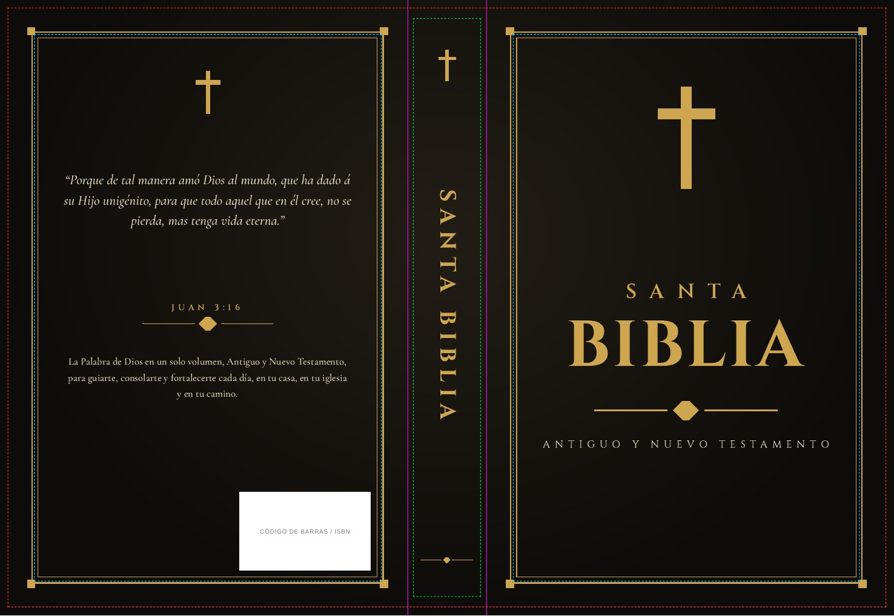

Guía de medidas
Rojo: corte final. Magenta: bordes del lomo. Celeste: margen seguro de las tapas. Verde: margen seguro del lomo.
Cinco diseños de tapa completa (contraportada, lomo y portada) en un solo PDF cada uno, con sangrado y listos para llevar a la imprenta. Las medidas son provisorias: se ajustan a los datos de tu imprenta.

Rojo: corte final. Magenta: bordes del lomo. Celeste: margen seguro de las tapas. Verde: margen seguro del lomo.
Si el botón no funciona en tu vista, abrí esta página en el navegador desde claude.ai para descargar los PDF.